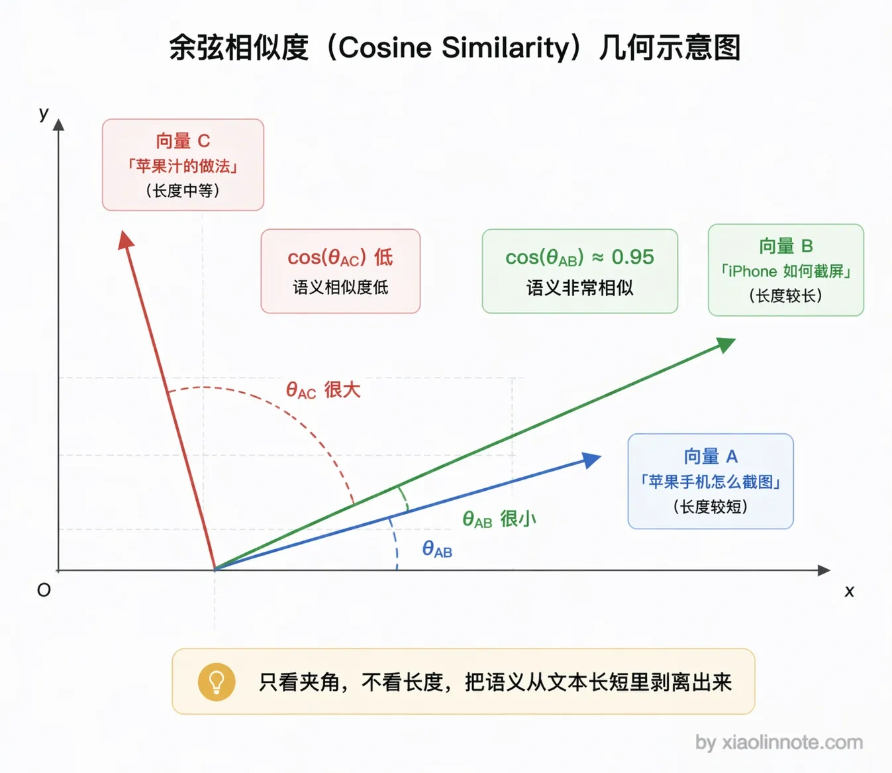
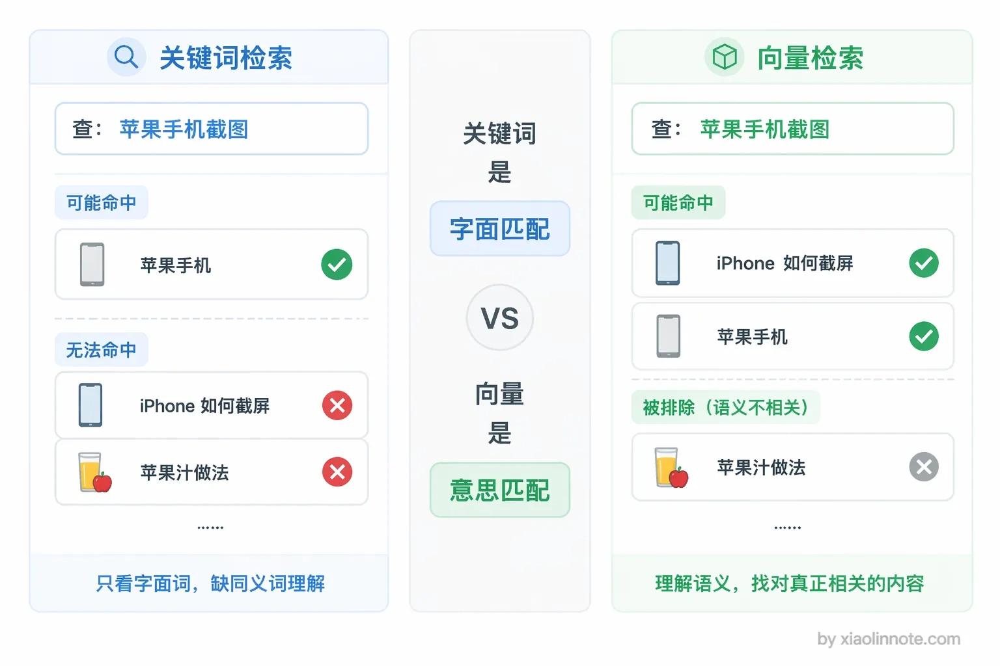
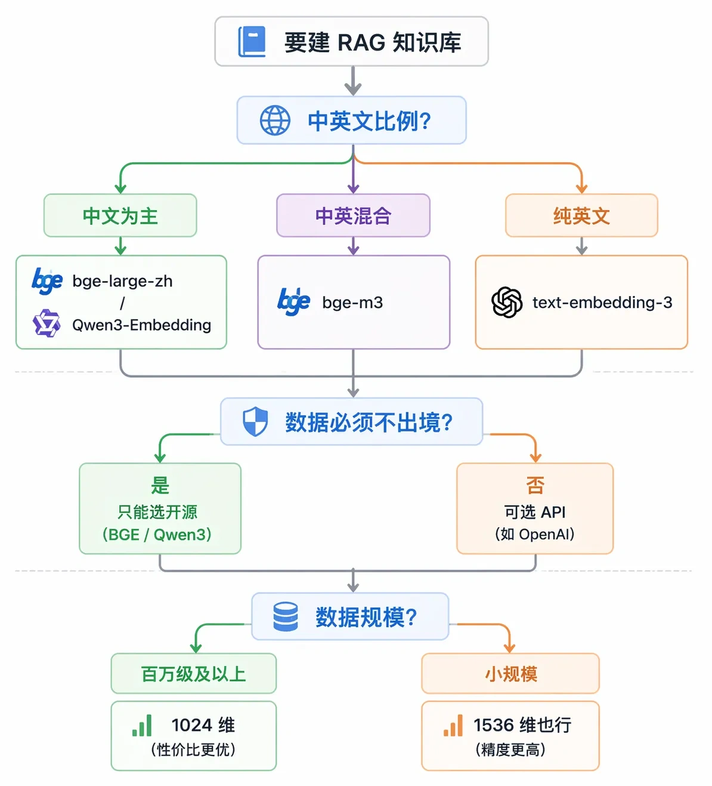
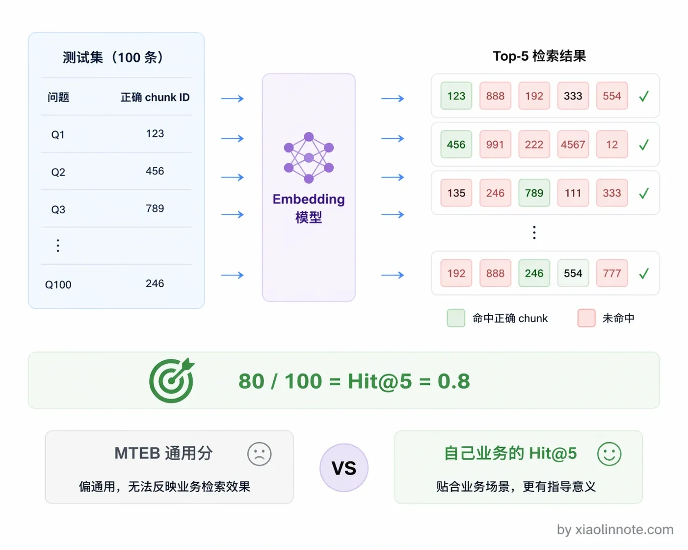

在 RAG 中 Embedding 究竟是什么？如何选择和评估一个 Embedding 模型？
👔面试官：RAG 里的 Embedding 是什么？你是怎么选模型的？
🙋♂️我：Embedding 就是把文本变成向量，用 OpenAI 的模型就行了，效果最好。
👔面试官：「把文本变成向量」说了等于没说。向量的关键特性是什么？为什么语义相似的文本向量就靠近？这个原理你能解释吗？而且 OpenAI 的模型在中文场景上效果就一定好吗？
🙋♂️我：那我就选排行榜分数最高的模型，MTEB 排行榜第一名应该没问题吧？
👔面试官：MTEB 用的是通用数据集，你的业务是做医疗问答还是法律咨询？通用排行榜能代表你的场景效果？你有没有在自己的数据上做过评估？Hit@K 是什么指标你知道吗？
🙋♂️我：呃……Hit@K 没听过，我们就直接用 OpenAI 的，没测过别的。
👔面试官：选模型不测试，全靠感觉和排行榜，这样做出来的系统能好用就怪了。
好吧，Embedding 这块看似只是调个 API，但选型不当整个 RAG 的检索质量都会受影响。下面我来讲清楚。
💡 简要回答
Embedding 我理解就是把一段文本转成一串数字向量的过程。它有一个很关键的特性，就是语义相近的文本，转出来的向量在数学空间里的距离也近。RAG 里的语义检索就是靠这个实现的，不是关键词匹配，而是看两段内容的意思相不相近。
选模型的话，我主要看三个维度：第一是中文支持，中文场景我会优先选 BGE 系列，效果其实比 OpenAI 的模型还要好；第二是向量维度，维度越高精度越好，但存储成本也越大；第三是最大输入长度，这个决定了能处理多长的 chunk。
评估这块我的建议是不要只看通用排行榜，一定要在自己的业务数据上跑召回测试，那个才是真正有参考价值的。
📝 详细解析
Embedding 是什么?
Embedding 模型做的事情本质上是「语义压缩」，把一段自然语言文本映射成一个固定长度的浮点数向量。比如一个 1024 维的 Embedding 模型，不管输入的文本是 10 个字还是 500 个字，输出都是一个长度为 1024 的数字列表。
这个映射最关键的性质是：语义相近的文本，向量的余弦相似度高。
为什么衡量相似度要用「余弦」而不是直接算两个向量的直线距离？因为在高维空间里，两段文本的向量长度（模长）会受文本长度、表达强度等非语义因素影响，直接比距离会把「长短」和「语义」混在一起。而余弦只看两个向量的方向（也就是夹角），方向越一致余弦值越接近 1，正好把「意思相近」从「文本长短」里剥离出来。你可以把它理解成：两段话如果「指向同一个意思」，它们的向量箭头就朝着同一个方向，至于箭头多长无所谓。

你可能会觉得这没什么了不起的，关键词搜索不也能找到相关内容吗？还真不一样。
比如「苹果手机怎么截图」和「iPhone 如何截屏」可能在某个 Embedding 模型的空间里较接近；具体余弦数值没有跨模型、跨领域的通用阈值。「苹果手机」和「苹果汁」也可能因上下文、模型和语料产生不同距离，因此要用业务数据验证。
这就是语义检索比关键词匹配强的核心原因，它能处理同义词、近义词和不同的表达方式。很多人以为向量检索就是高级的关键词匹配，其实完全不是一回事，它是从「意思」层面在做匹配。

常见 Embedding 模型对比
理解了 Embedding 的原理，接下来就是选模型了。Embedding 模型这两年迭代很快，目前主流的选择大概分几类。
- 常见候选包括托管 Embedding API、可本地部署的开源/开放权重模型，以及支持稠密、稀疏或多向量表示的模型。具体模型名、维度、最大输入、价格、语言覆盖和部署条款会随版本变化，不能把某个排行榜或当前产品描述当作长期结论。
如何选择 Embedding 模型？
聊完了模型分类，具体到你自己的项目，该怎么选？选模型的时候主要看这几个判断点。
- 第一是语言、领域和查询/文档编码方式：选择与业务语言和任务匹配、且允许离线/在线部署的候选。
- 第二是数据合规要求：评估数据驻留、供应商处理条款、网络、日志和本地部署能力，不能仅凭“开源”标签下结论。
- 第三是维度、距离、归一化、输入长度、吞吐、成本和迁移方式：维度更高不保证质量更好，应在同一索引与过滤条件下测召回、延迟、内存和费用。

如何评估 Embedding 模型？
这里有一个常见的误区：很多人拿 MTEB 这类通用排行榜的分数来选模型，觉得分数高就一定好。MTEB 是一个权威的文本 Embedding 通用排行榜，用多种标准数据集评测模型的语义搜索能力，是好的参考。
但它用的是通用数据集，你的业务场景（比如医疗问诊、法律文档、客服知识库）和通用数据分布差异很大，排行榜第一的模型不一定适合你。就好比高考状元不一定擅长你那个行业的专业考试，测评的数据分布不对，分数就没有参考意义。
正确的评估方法是在自己的业务数据上测：准备分层的「问题 + 必要证据」标注，比较候选模型在相同切分、索引、过滤和 Query 处理下的 Recall@K/Hit@K、MRR/nDCG、精确实体与版本命中、P95/P99、吞吐、内存、价格和数据合规。Hit@5 = 0.8 只是示例，不应使用固定 0.7 阈值决定换模型；还要做端到端引用支持和人工校准。

把常见的选型维度汇总对比一下：
| 模型 | 维度 | 中文效果 | 是否开源 | 适用场景 |
|---|---|---|---|---|
| text-embedding-3-small | 1536（可降维） | 一般 | 否（API） | 英文为主、快速上手 |
| text-embedding-3-large | 3072（可降维） | 一般 | 否（API） | 英文为主、精度要求高 |
| bge-large-zh-v1.5 | 1024 | 很好 | 是 | 中文知识库经典选择 |
| bge-m3 | 1024 | 好 | 是 | 中英混合、多语言、多模式检索 |
| Qwen3-Embedding | 多种可选 | 很好 | 是 | 中文场景新一代强力选择 |
| Voyage-3-large | 1024 | 一般 | 否（API） | 英文高精度检索 |
🎯 面试总结
回到开头那段面试，Embedding 这个问题考察的是你对 RAG 检索层基础的理解。
回答要讲清三点。
第一，Embedding 不只是「文本变向量」，关键是语义相近的文本向量距离近，这才是语义检索的基础。
第二，选模型要看场景和约束：语言覆盖、领域、查询/文档指令、维度与输入长度、许可证、部署资源、隐私和成本都要纳入候选；不要把某个开源或闭源模型写成普遍最优。
第三，评估模型不要只看 MTEB 排行榜，要在自己的业务数据上跑 Hit@K 测试，这才是真正有参考价值的。
如果面试官追问「你用的什么模型，为什么选它」，可以用可复现的方式回答：说明候选类别、版本与部署条件，再报告在固定数据、切分、过滤和预算下的 Recall@K/MRR、延迟、成本与合规结果；没有真实结果就明确说是待验证方案。